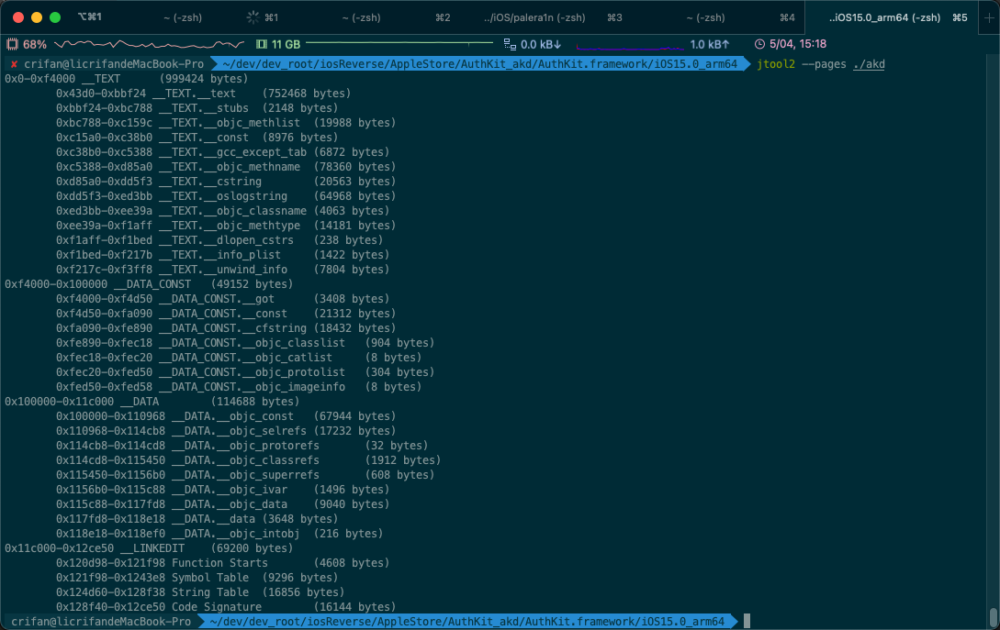

akd
--pages
✘ crifan@licrifandeMacBook-Pro ~/dev/dev_root/iosReverse/AppleStore/AuthKit_akd/AuthKit.framework/iOS15.0_arm64 jtool2 --pages ./akd
0x0-0xf4000 __TEXT (999424 bytes)
0x43d0-0xbbf24 __TEXT.__text (752468 bytes)
0xbbf24-0xbc788 __TEXT.__stubs (2148 bytes)
0xbc788-0xc159c __TEXT.__objc_methlist (19988 bytes)
0xc15a0-0xc38b0 __TEXT.__const (8976 bytes)
0xc38b0-0xc5388 __TEXT.__gcc_except_tab (6872 bytes)
0xc5388-0xd85a0 __TEXT.__objc_methname (78360 bytes)
0xd85a0-0xdd5f3 __TEXT.__cstring (20563 bytes)
0xdd5f3-0xed3bb __TEXT.__oslogstring (64968 bytes)
0xed3bb-0xee39a __TEXT.__objc_classname (4063 bytes)
0xee39a-0xf1aff __TEXT.__objc_methtype (14181 bytes)
0xf1aff-0xf1bed __TEXT.__dlopen_cstrs (238 bytes)
0xf1bed-0xf217b __TEXT.__info_plist (1422 bytes)
0xf217c-0xf3ff8 __TEXT.__unwind_info (7804 bytes)
0xf4000-0x100000 __DATA_CONST (49152 bytes)
0xf4000-0xf4d50 __DATA_CONST.__got (3408 bytes)
0xf4d50-0xfa090 __DATA_CONST.__const (21312 bytes)
0xfa090-0xfe890 __DATA_CONST.__cfstring (18432 bytes)
0xfe890-0xfec18 __DATA_CONST.__objc_classlist (904 bytes)
0xfec18-0xfec20 __DATA_CONST.__objc_catlist (8 bytes)
0xfec20-0xfed50 __DATA_CONST.__objc_protolist (304 bytes)
0xfed50-0xfed58 __DATA_CONST.__objc_imageinfo (8 bytes)
0x100000-0x11c000 __DATA (114688 bytes)
0x100000-0x110968 __DATA.__objc_const (67944 bytes)
0x110968-0x114cb8 __DATA.__objc_selrefs (17232 bytes)
0x114cb8-0x114cd8 __DATA.__objc_protorefs (32 bytes)
0x114cd8-0x115450 __DATA.__objc_classrefs (1912 bytes)
0x115450-0x1156b0 __DATA.__objc_superrefs (608 bytes)
0x1156b0-0x115c88 __DATA.__objc_ivar (1496 bytes)
0x115c88-0x117fd8 __DATA.__objc_data (9040 bytes)
0x117fd8-0x118e18 __DATA.__data (3648 bytes)
0x118e18-0x118ef0 __DATA.__objc_intobj (216 bytes)
0x11c000-0x12ce50 __LINKEDIT (69200 bytes)
0x120d98-0x121f98 Function Starts (4608 bytes)
0x121f98-0x1243e8 Symbol Table (9296 bytes)
0x124d60-0x128f38 String Table (16856 bytes)
0x128f40-0x12ce50 Code Signature (16144 bytes)

结果分析：
arm64的akd二进制内部的偏移量：
- 整个
TEXT代码段是：0x0-0xf4000 __TEXT (999424 bytes = 976KB)- 我们要找到的，单独是程序的二进制代码是：
0x43d0-0xbbf24 __TEXT.__text (752468 bytes)= 约734.8KB
- 我们要找到的，单独是程序的二进制代码是：